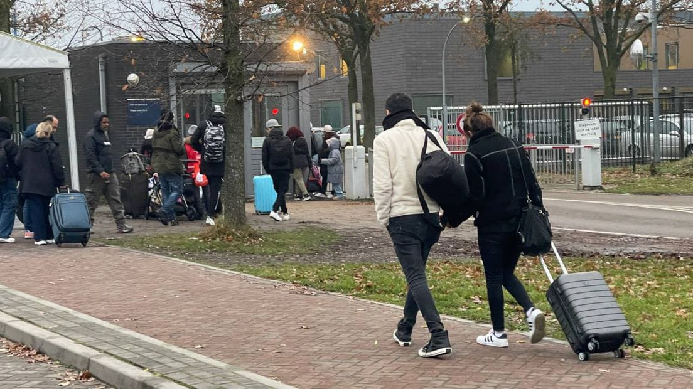

You can apply for asylum at an application center (In Dutch: Aanmeldcentrum). For that, you need to report in Ter Apel in Groningen.
Here is the address for the exact location: Ter Apelervenen 3, 9561 MC Ter Apel.
If it is too busy in Ter Apel, you might be transferred to Budel.
Asylum seekers who enter the country via plane can apply for asylum at the Schiphol Airport.

Aylum seekers arriving in Ter Apel to apply for asylum
Registration and Identification
In Ter Apel, Immigration and Naturalisation Service (IND) along with the police does your registration and identification by asking who you are, where you are from, your date of birth etc. You can provide them the documents which you have brought to the Netherlands that could help them identifying you. The police take your passport photos and fingerprints.
You apply officially for asylum by signing an asylum application on paper. Your details are used to make a Foreign Nationals Identity Document Type W (in Dutch: vreemdelingen identiteitsbewijs) for you.
Identification process
Receiving ID and Short Interview
You will stay in Ter Apel for about 3 to 4 weeks(The time period may vary depending upon how busy it is there). During this time, you will get an ID card(W document), you will be examined for TB, you will get a lawyer, you will get more information, and you will be provided with food.
After 1 or 2 weeks, you will be invited for a short interview(with translator provided). In this interview, you will be asked a bit more about yourself and about your journey. The reason for your coming to the Netherlands will also be asked briefly.
If you follow the Dublin Procedure. In that case, investigation shows that another European country is responsible for your asylum application.
Then you will be transferred to Asylum seekers' center (In Dutch: Asielzoekerscentrum or AZC).